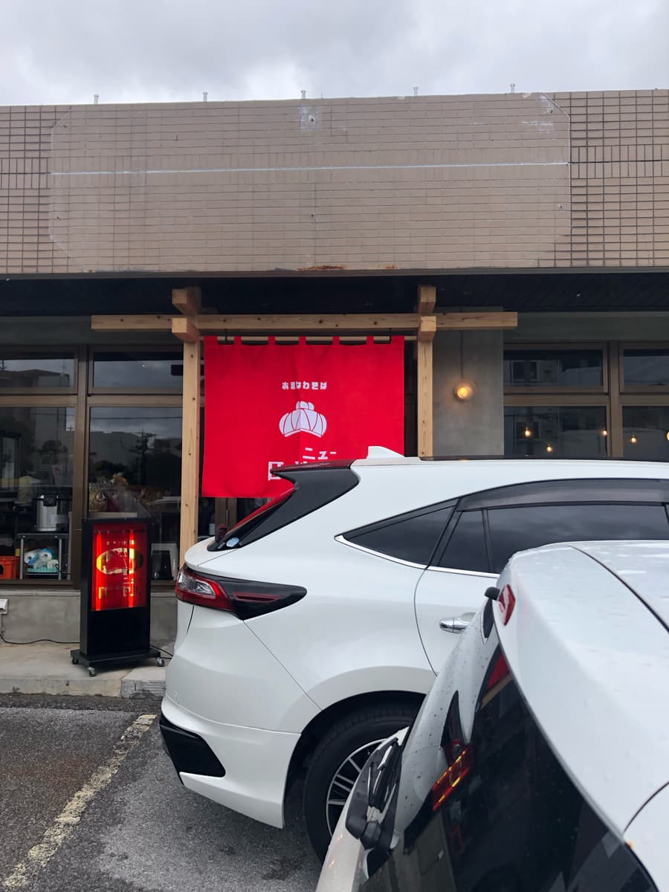
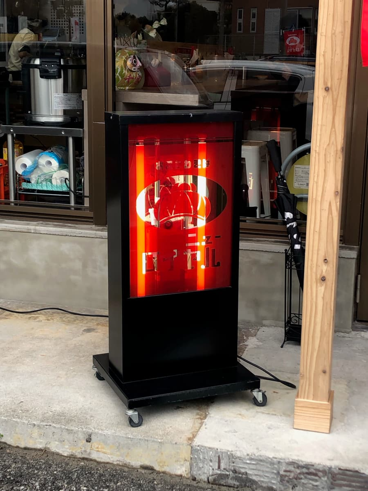
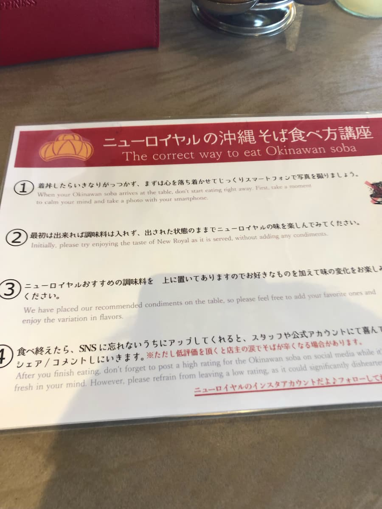
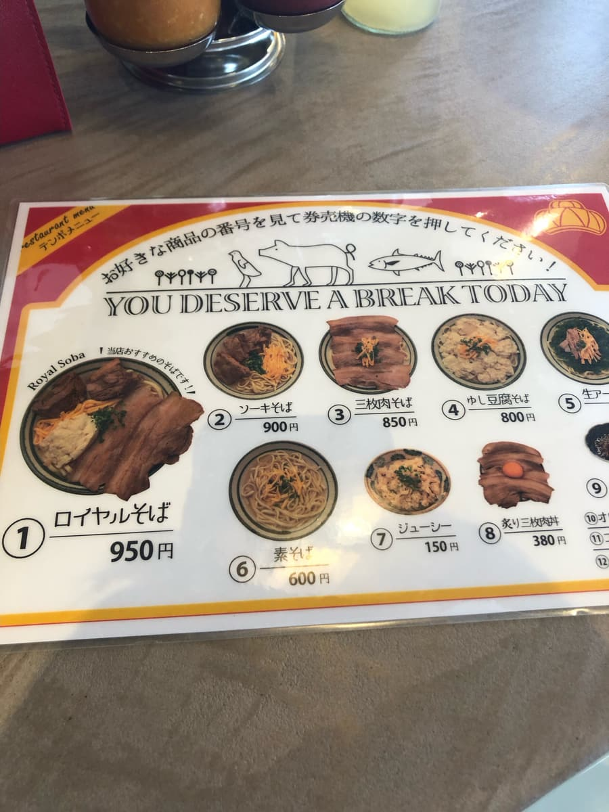
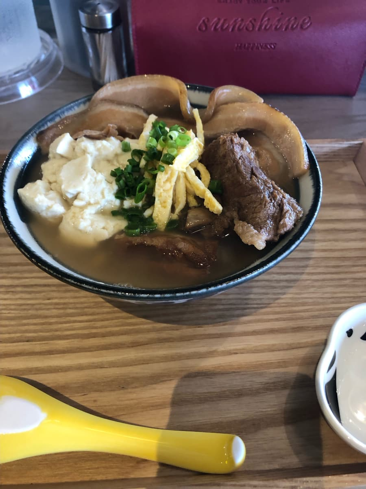
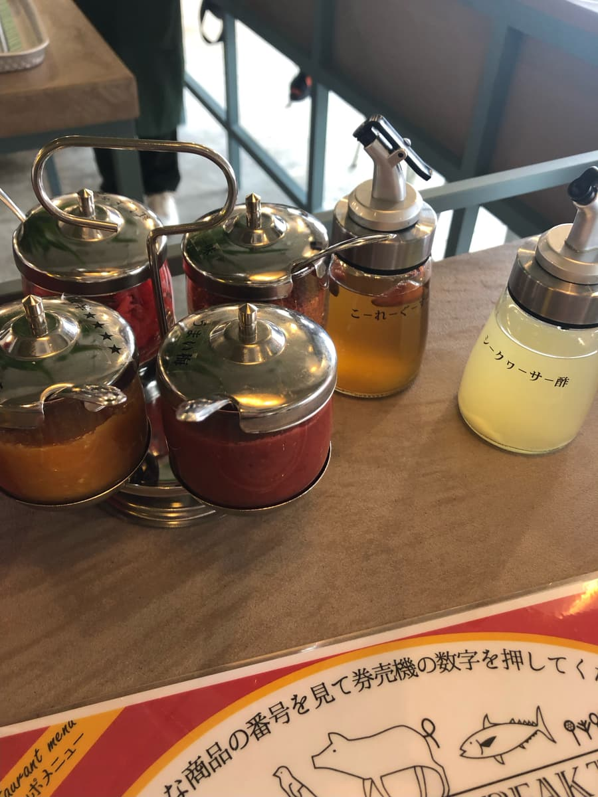

2024年1月去吃的😊 正值「第13届冲绳面集章活动（2023.10.1～2024.2.29）」期间，只差1间店就通关了，本来想在参加店吃，但因为办事的宇流麻市没有最后1间店，所以在网路上偶然得知这家店就去吃了😄


这家店，我之后Google了一下，才知道是2023年12月刚开幕的(^0^;) 依然是毫无调查(^0^;)
也许是因为刚开幕，尽管是平日中午，仍挤满了当地客人，还有不少穿着学生制服（国中生？高中生？）的客人😄
而且走进店内吓了一跳! 虽然这样说很失礼，这个地点在冲绳算是比较乡下的位置，但店内却是和这个地区不太相称？（🙏对不起）的相当时髦的装潢。
我觉得店内时髦得像那霸市若狭的「OKINAWA SOBA HITOTSU」呢😆
走进店内有设置售票机，店员引导我去购买。难得是新开的店，真希望也能导入无现金支付，可惜好像只能付现金(^0^;)
点餐点了和店名相同的「皇家面」，然后在店员带领的吧台座位等待😄

一坐到吧台座位，竟然有叫做「吃法讲座」的说明。「请尽量发到社群网站上」的说明是其他店没有的新鲜感ｗｗ 感觉店主善用社群网站的行销策略很高明😁
如果来吃的客人自己帮忙宣传这家店，口碑就会不断扩散成免费广告，真不愧是这家店，是符合现代的策略呢。
我自己也努力用面部落格和X来发布资讯，所以时髦的店内情况其实也很想多拍一些，但客人很多，而且还有很多学生等年轻人，大叔拿着手机啪嚓啪嚓拍，就算被嫌弃大叔自己也会觉得丢脸而在意，所以客气地没有拍店内的情况。不好意思🙏😆


「皇家面」来了😁 这也是我之后Google才知道的，一开始会先上海葡萄（水云）的小碟，我吃得很开心，这家店原本是海葡萄（水云）店，后来开了冲绳面店。
说到冲绳面×海葡萄（水云），我想起的是西原町的「兄弟小」呢😆
一边回想着这件事，一边先照例喝一口汤😄
是柴鱼高汤和猪骨的混合高汤，猪骨高汤味道明显，是清爽・温和系的猪骨高汤。汤的味道我觉得跟普通猪骨高汤的店差不多。
面条虽然没有拍进照片里，是中粗的感觉，似乎是使用生面，有滑溜感，但嚼劲没那么强，算是比较软的感觉。
关于配料，三层肉切得相当薄，这点跟其他店不太一样。排骨虽然软嫩，但有些筋感（口感偏韧），也有干柴的部分。
冲绳嫩豆腐至今吃过的店都是使用糸满市的「宇那志豆腐」，不过这次因为是宇流麻市的店，听说使用的是当地宇流麻市的「志林川豆腐」的冲绳嫩豆腐。
但是，对不起🙏 我舌头不灵敏，不太分得出「宇那志豆腐」和「志林川豆腐」的差别。这次吃的志林川豆腐的冲绳嫩豆腐，感觉似乎稍微硬一点？

把端上来的皇家面大致吃过一遍后，就像「吃法讲座」里说的，来享受变化口味😄
桌上有一味辣椒粉、红姜、柚子胡椒、美味梅、扁实柠檬（Shikuwasa）醋、岛辣椒泡盛这些调味料。
首先稍微淋上「美味梅」，品尝面和汤。我边试边想着「梅肉跟猪骨高汤或冲绳面合吗？」，结果吓了一跳(°°)
虽然是普通的猪骨高汤汤头，却变成了能感受到酸味的爽口汤头、面条的味道😁 普通地很搭，很好吃。
接着把「扁实柠檬醋」淋在汤里品尝。这也从普通的猪骨高汤汤头变成了能感受到酸味的清爽系汤头滋味。让我想起几天前吃的八重濑町「吃茶 加恩」加了柠檬香茅的汤。不过，加恩是柴鱼为底，这里是猪骨为底，味道不同就是了。
评分（9分/15分）：就是普通的好吃。因为是新开幕的店，真希望能支援无现金支付。店内时髦，欢迎发布社群网站，所以推荐给想发布打卡社群贴文的人。猪骨味明显的汤加上独特调味料来变化口味，感觉很新颖。三层肉切得薄薄的，排骨虽然也软嫩，但有些干柴，有筋感（口感偏韧）。
面：★★★☆☆（3）
汤头：★★★☆☆（3）
配料：★★★☆☆（3）